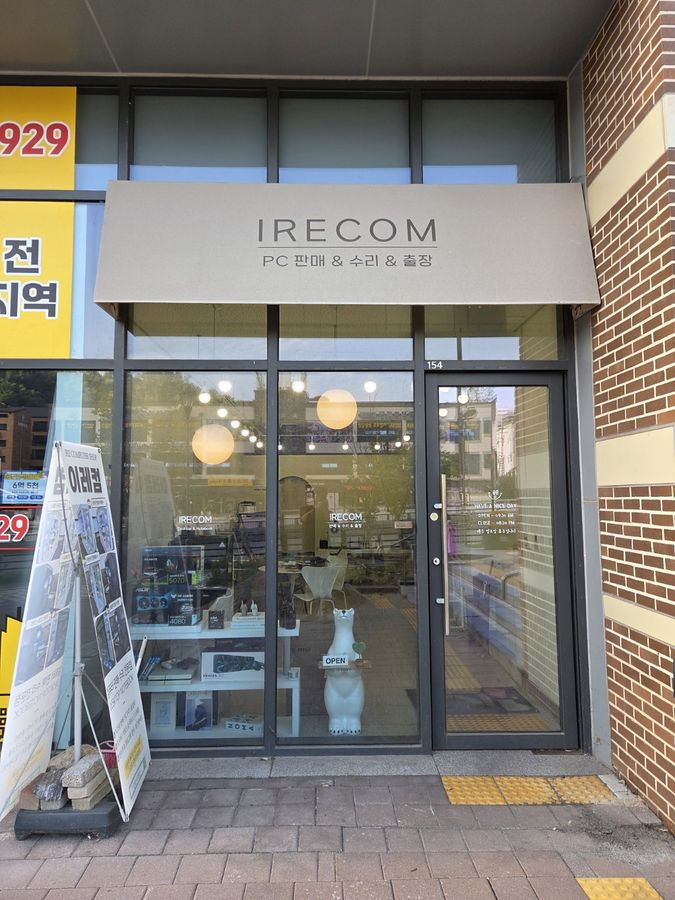
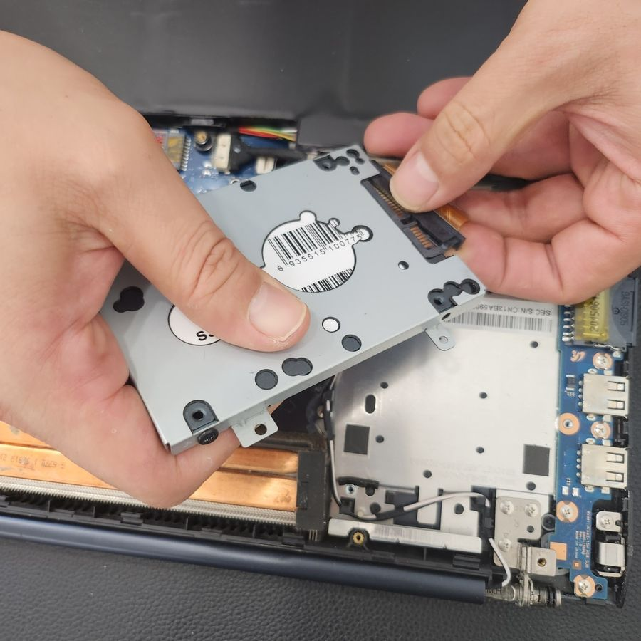
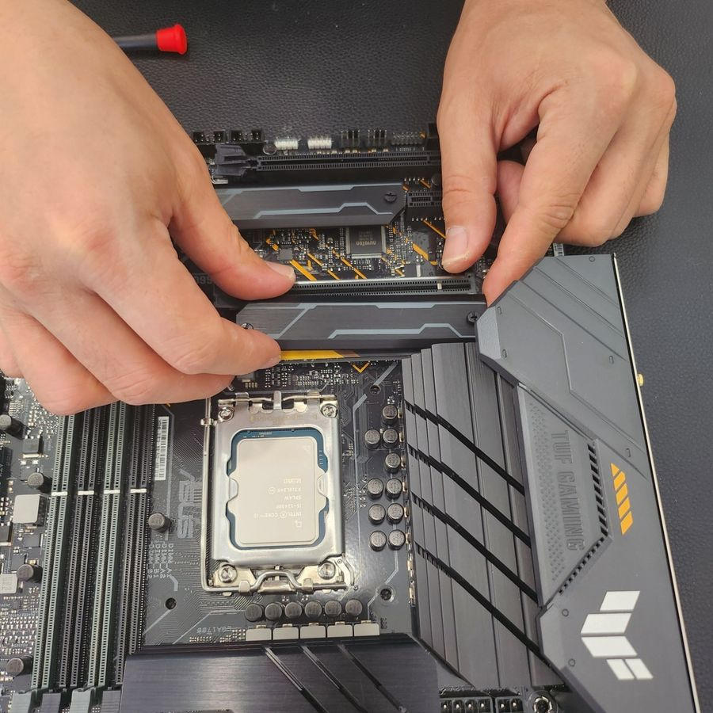
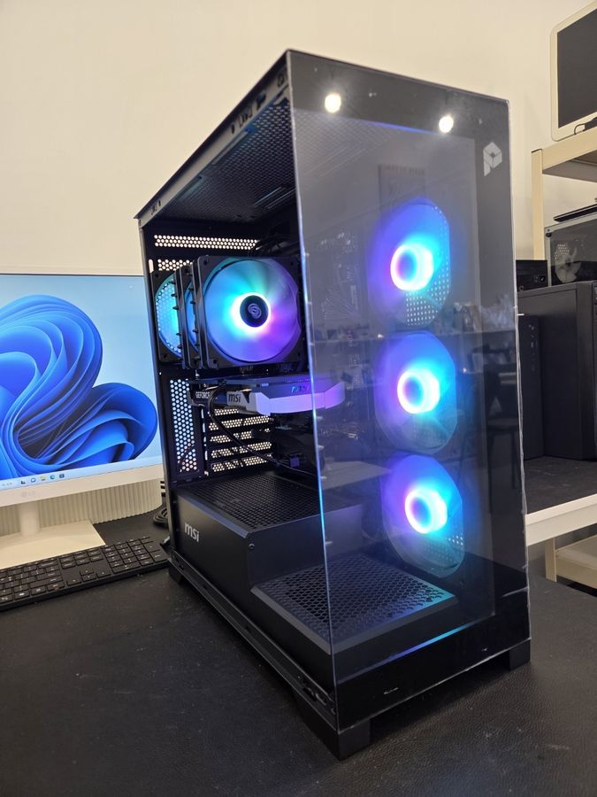
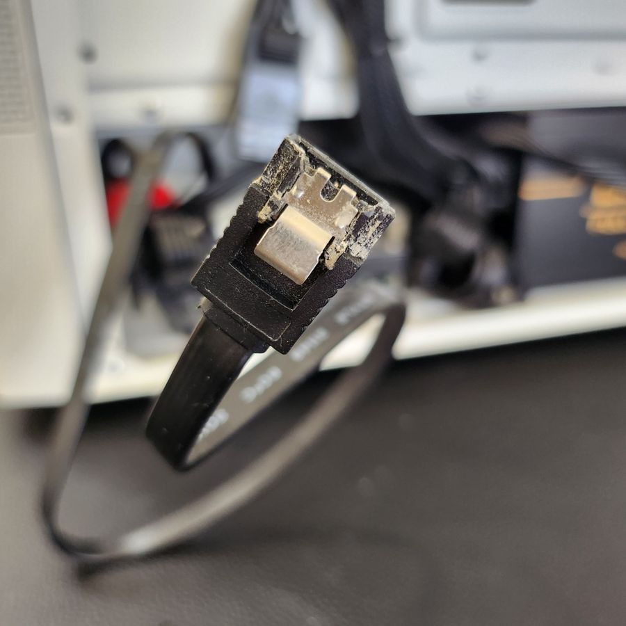
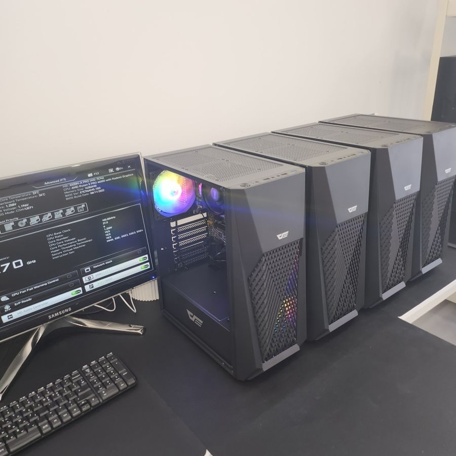

컴퓨터수리·출장수리·조립PC·컴퓨터판매·노트북수리까지 한 곳에서 상담해드립니다.
고양·삼송 지역에서 컴퓨터 관련 문제와 구매 상담을 도와드립니다.
전원·부팅·화면·속도 저하 등 증상을 점검합니다.
방문이 어려운 경우 출장 상담을 통해 현장에서 확인합니다.
사무용부터 고사양 게이밍까지 용도와 예산을 상담합니다.
사용 목적에 맞는 PC 구성과 부품을 안내합니다.
저장장치 교체, 내부 점검, 속도 저하 등을 확인합니다.
윈도우 설치 및 기본적인 시스템 점검과 진단을 도와드립니다.
SSD·HDD 교체 전 데이터 이전과 복구 상담을 진행합니다.
노트북 부품 및 케이블, 저장장치 등 하드웨어 문제를 점검합니다.
메모리·SSD·그래픽카드 등 업그레이드와 상태 점검을 상담합니다.
실제 업로드 사진을 사용해 GitHub Pages에서도 깨지지 않도록 구성했습니다.

고양시 덕양구 삼송로 222, 삼송역 현대헤리엇 상가 154호.

노트북 분해, 저장장치 교체 및 내부 부품 점검 사례입니다.

CPU 장착부터 부품 조립과 초기 점검까지 진행합니다.

게이밍·작업용 등 사용 목적에 맞춰 부품을 구성합니다.

전원과 데이터 케이블, 부품 연결 상태를 확인합니다.

사무용부터 고성능 PC까지 용도와 예산을 상담합니다.
작업 전 문제와 필요한 작업 범위를 확인합니다.
사용 중 발생한 증상과 상황을 확인합니다.
하드웨어와 소프트웨어 상태를 확인합니다.
필요한 작업과 예상 비용을 안내합니다.
수리 후 정상 작동 여부를 확인합니다.
출장 가능 여부는 상담 시 확인해주세요.
경기도 고양시 덕양구 삼송로 222, 삼송역 현대헤리엇 상가 154호
증상을 말씀해주시면 상담부터 도와드리겠습니다.